|
|
其实，我真的要感谢我的父母，只是不喜欢他们某些处理事情的方式，怀念那些曾经能天天看到父母的时光。
我觉得好朋友不需要太多，两个就够了，一个肯把钱借给你，当他向你要债时，另一个肯把他打死。
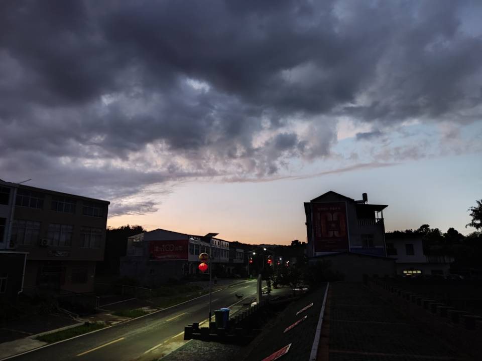
生活坏到一定程度就会好起来，因为他无法更坏。努力过后，才知道许多事情，坚持坚持，就过来了——
也许是生活是一种宿命，但我认为它是一种选择
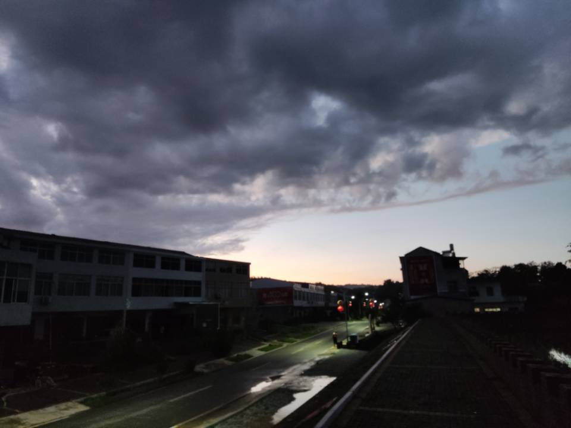
接下来就说说我的黄高三年生活
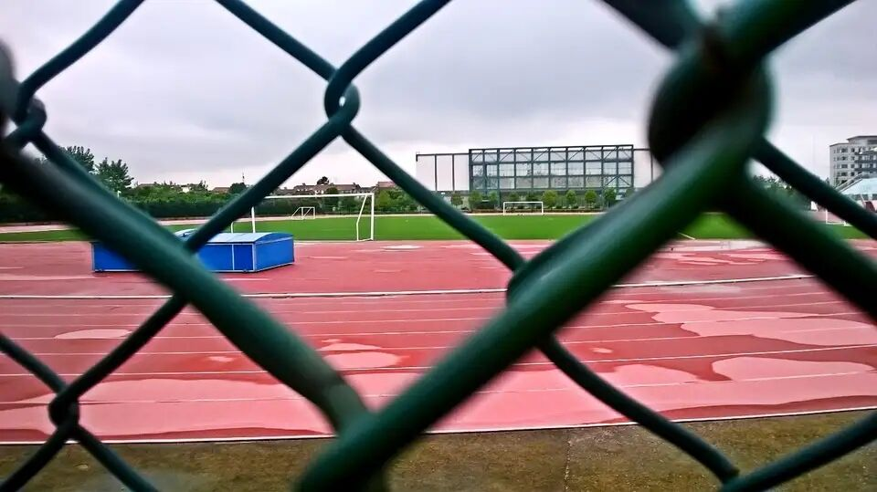
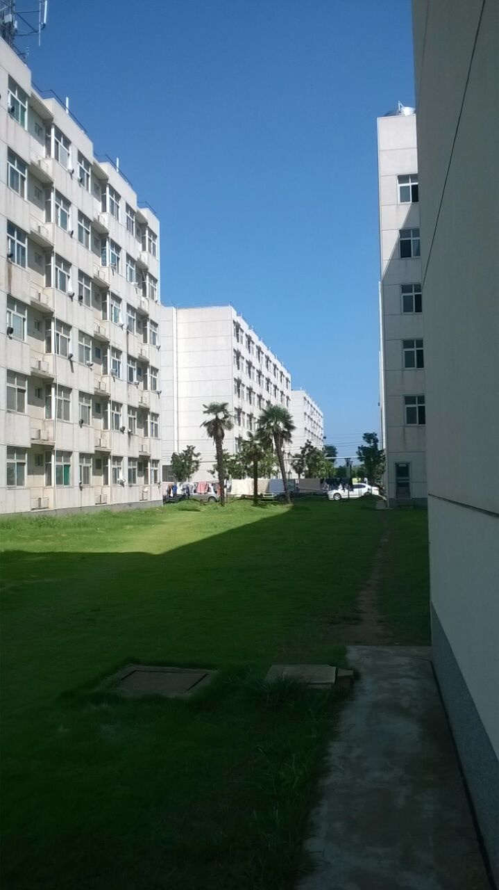
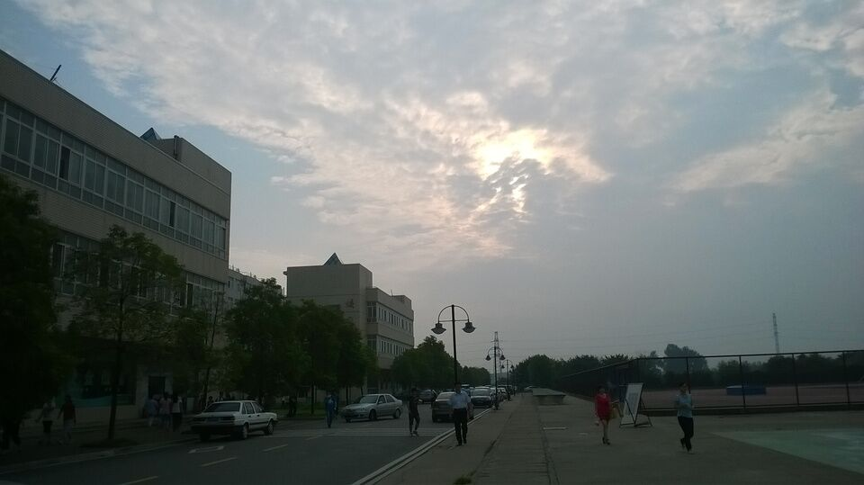
当时好像住在三栋
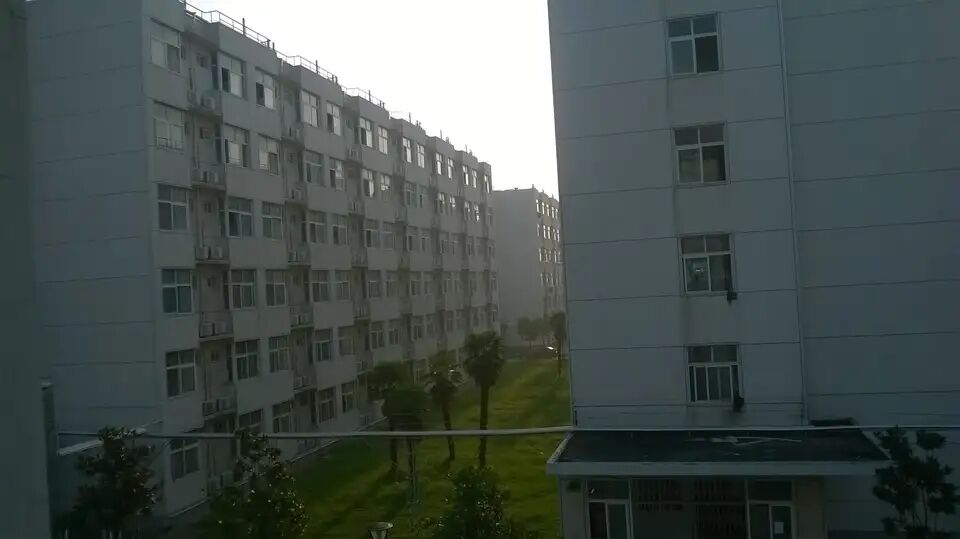
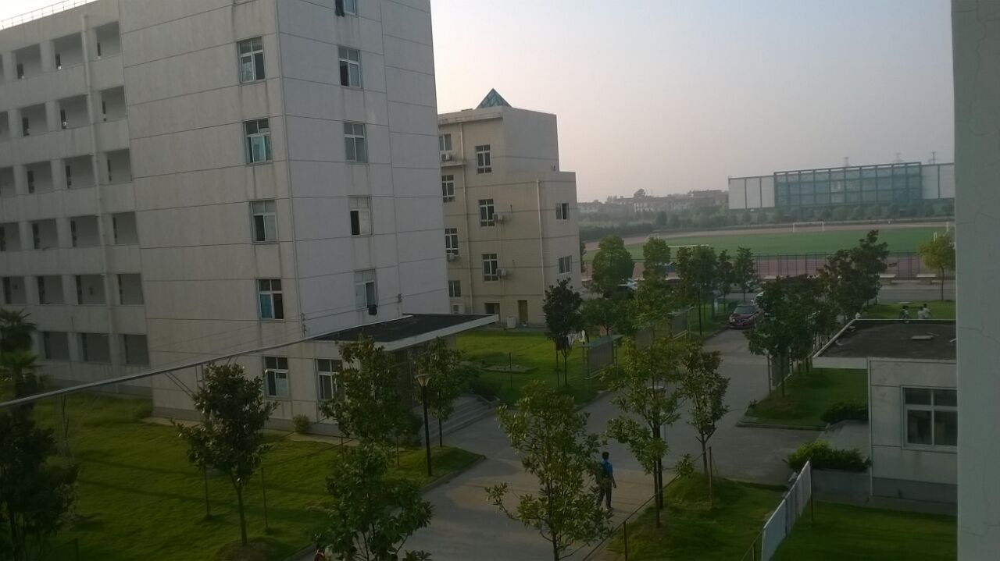
这是我刚来黄高一个星期拍的几张照片，那个星期在军训，这边是我对 黄高的初印象
崇德楼这个角度经典
很大气的三栋楼
下自习的宿舍楼
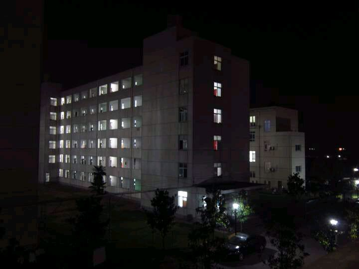
到大学才发现黄高的宿舍厕所这一块还是蛮大滴，也挺干净
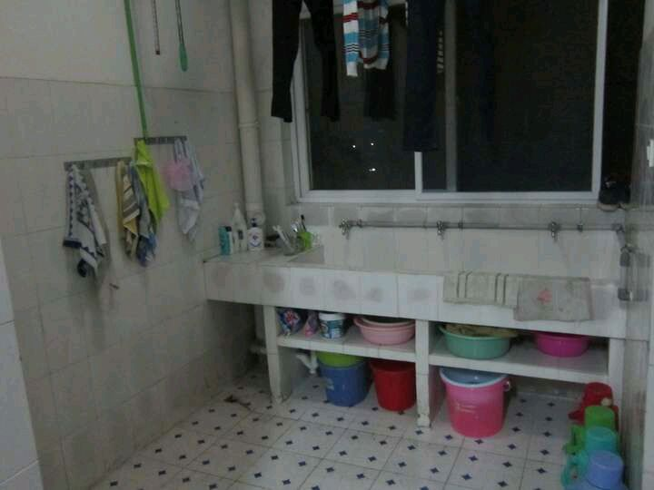
当时开学一个宿舍才住三个人，真的很宽敞
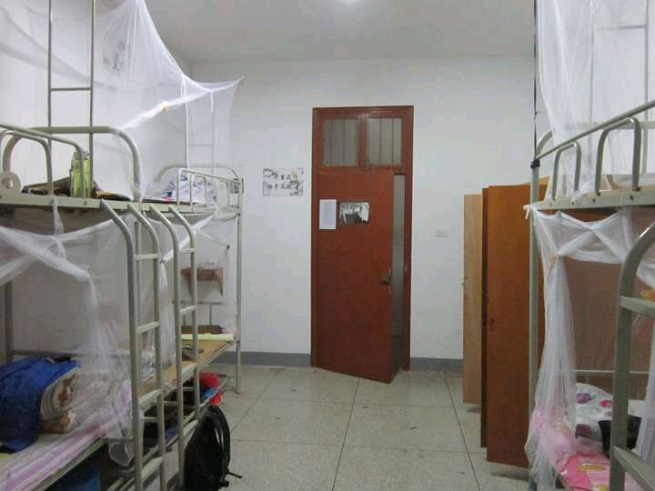
刚没来几天，我们就用小桌子打迷你乒乓球，其他宿舍的也过来玩
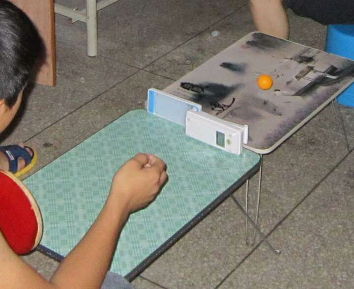
这个是豪华版的乒乓球桌
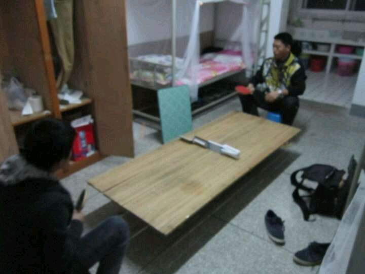
高一时 经常喜欢周六放假时去打乒乓球，天气特别好
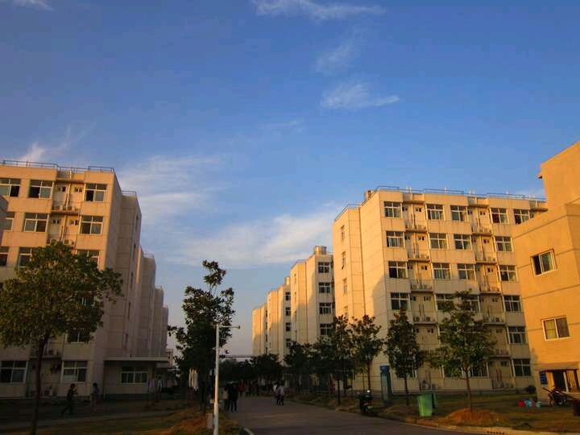
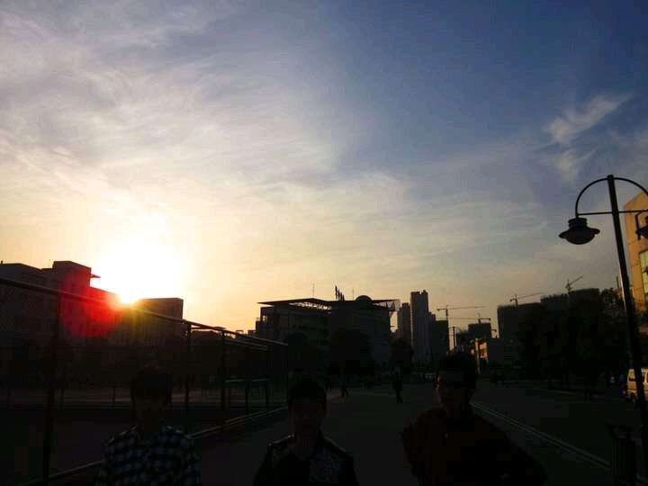
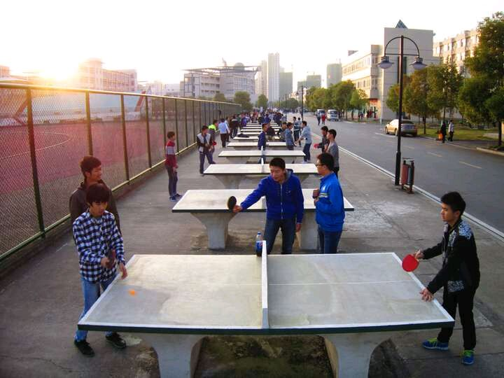


|
| |
|
| |